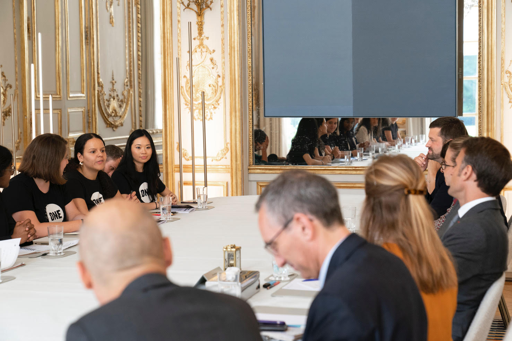
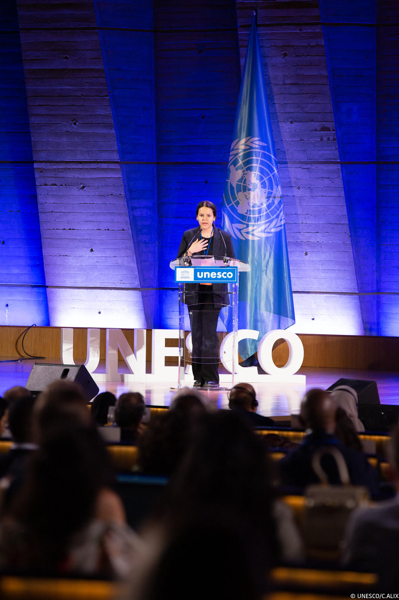

Un mot de la fondatrice
Je suis Lilia TOUll. diplômée d'un double master en droit et issue d'un quartier populaire. L'engagement n'a permis de comprendre non rôle citoyen et d’agir concrètement pour les causes qui me tiennent à cœur.

Forte de mon expérience en tant que Jeune leader engagée au niveau national et international, J'ai créé l'Observatoire des Jeunesses et de l'Engagement pour visibiliser les actions des jeunesses françaises et les accompagner dans leur engagement pour la justice sociale, l'égalité et la justice climatique.
